Action Reports: Detailed View Mode
SEARCH TIP Press CTRL + F (Windows and Linux) or CMD + F (Mac) to search within this page.
To access this screen, click: Strategy > My actions > Action Reports.
Some actions, such as screen access, are permitted only for authorized users, that is, users with the appropriate profile. In other words, if the user does not have the right profile, the user cannot perform the action.
To configure this security (also called user rights), complete the following steps:
-
Define the profiles in the Profile Management screen.
-
Define users and attach one or more profiles to them in the User Management screen.
-
Assign user rights to the desired profiles in the Profile Matrix screen.
The table below contains screen actions that are related to user rights:
| Module | Screen | Action |
|---|---|---|
|
My actions |
Action reports |
Screen access |
|
Validate the action |
||
|
Refuse the action |
||
|
Revise the year of the action |
||
|
Update the progress of the action |
||
|
Update the actuals of the action |
||
|
Update the budget for the action |
||
|
Add an action without validation |
||
|
Abort an action |
||
|
Update action status |
||
|
Start an action |
||
|
Validate/reject a pending action |
||
|
Update warnings for actions |
||
|
Update actions even after its status was updated |
||
|
Workflow - Validate action |
||
|
Workflow - Unvalidate action |
||
|
Workflow - Close action |
||
|
Workflow - Unclose action |
||
|
Create an unattached action without workflow/status |
For more information on this screen, see the following documentations:
There are two action view modes:
-
The detailed view mode
-
The synthesis view mode
To select a view mode, click the  switch button.
switch button.
The detailed view mode is composed of:
-
The Action List
-
The Action Card
You can Export Information on Actions.
NOTE To find information on statuses and warnings, see the Action Reports: Statuses and Alerts documentation.
Action List
At the bottom left of the screen, you can view the action list. This action list changes based on the items selected in:
-
The point of view (POV)
-
The Status filter
-
The Warning filter
Action Card
When you select an action in the action list, an action card appears:
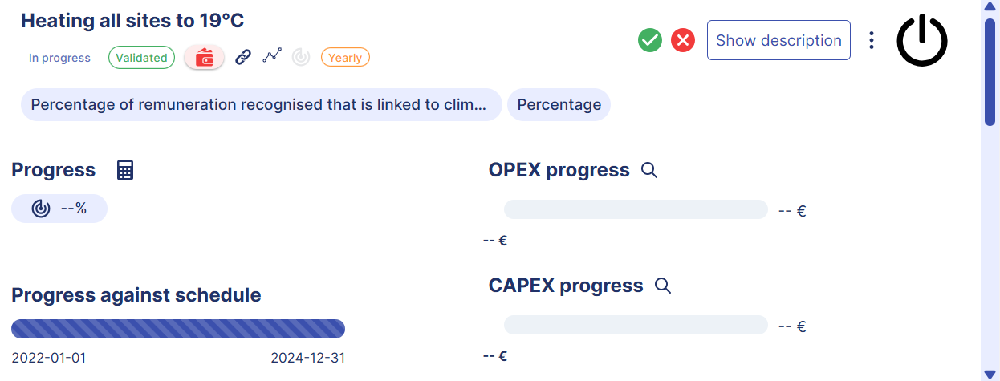
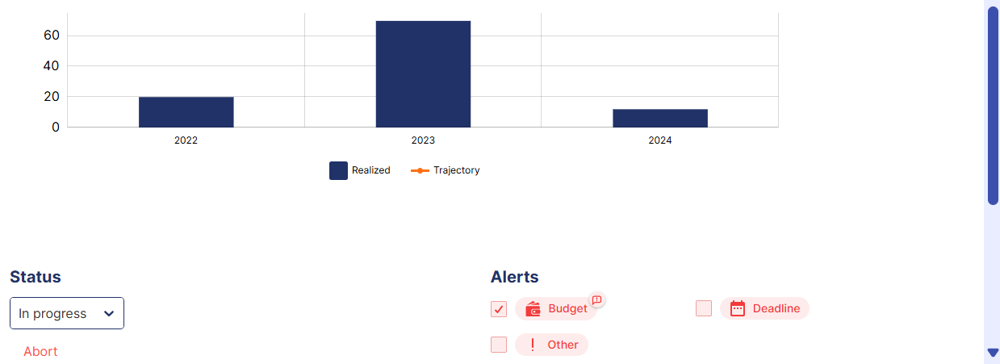
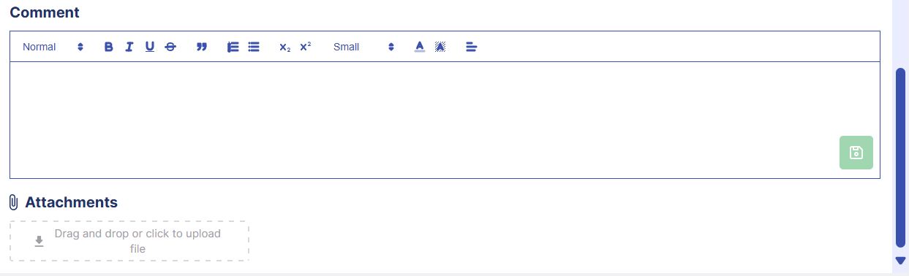
At the top of the action card, you can view the following items:
| Item | Description |
|---|---|
|
|
Label for the observed action. |
|
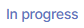 |
Icon that indicates the action status. NOTE To know more on statuses, see Statuses. |
|
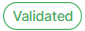 |
Icon that indicates the action workflow state. NOTE To know more on the workflow actions, see the following sections:
|
|
|
This icon indicates that an alert is attached to the action. NOTE To know more on alerts, see Alerts. |
|
|
This icon is in bold if the action is attached to a strategy. |
|
|
This icon is in bold if the action is attached to an indicator. |
|
|
This icon is in bold if the action has defined quantitative targets. |
|
|
Icon that indicates the action periodicity. |
|
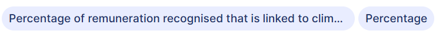 |
Label for the indicator bound to this action and its unit. |
|
|
Button that allows you to perform one of the following action: Validate, Close, Reject or Reopen Actions. |
|
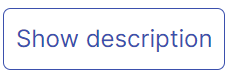
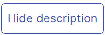 |
Allows you to show or hide the description of the action. The description appears below the icons. |
|
|
Button that allows you to perform three different actions: |
|
|
Icon assigned to an action. |
In the action card, you can:
Update an Action
NOTE You can only update actions whose periodicity matches that selected in the POV. Moreover, this feature is only available in the detailed view mode.
To update an action:
-
Click the
 button, then select Show details.
button, then select Show details.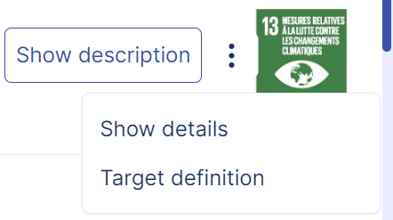
Three dots drop-down menu
The Edit action pop-up panel appears in full screen.
-
Enter the new information, then save your data.
NOTE To help you fill out each tab, read the following sections:
Track the Action Progress
In this section, you can find the following sub-sections:
View the Action Progress in Percentage
There are two types of action progress:
-
Entered action progress: If the action is not linked to an indicator, you must enter an action progress.
-
Calculated action progress: If the action is linked to an indicator, the action progress is automatically calculated based on the previously collected data and target values set up for a given year, period, periodicity, and entity.
You can view the action progress in percentage for the current year. The current year is the year defined in the point of view (POV).
The calculation formula depends on the trend given to the values of the indicator attached to the action, that is Maximize (indicator values increase over time) or Minimize (indicator values decrease over time):
-
Calculation formula if the trend is Maximize or there is no defined trend:

-
Calculation formula if the trend is Minimize:

Enter or Edit the Action Progress
NOTE You can only edit the progress for actions with the same periodicity as selected in the POV.
To enter or edit the progress for an action not linked to an indicator:
-
Hover over Progress.
The
 button appears.
button appears. -
Click the
button.An input box appears.
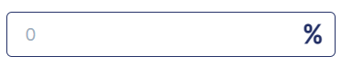
-
Enter your progress in percentage.
-
Click the button.
Calculate the Action Progress Average
To calculate the progress average of the action from child entities to parent entities:
-
Click the
 button.
button.The Calculate progress at all levels pop-up window appears.
-
Click OK.
Track the Calendar Progress
NOTE You can view the calendar progress in the Progress against schedule block.
The action progress against schedule, namely the calendar progress, is automatically calculated based on the year in the POV, the start year and the end year of the action.
In the example below:
-
2021 is the year in the POV.
-
2019 is the start year of the action.
-
2025 is the end year of the action.
-
The calendar progress is 33.333%.
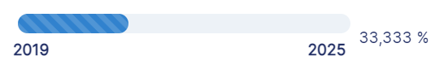
Track the OPEX and CAPEX Progress
As part of the CSRD standard, the ESRS require the provision of budgets allocated to action plans.
A distinction is made between:
-
Budgets related to capital expenditures (CAPEX): CAPEX is generally one-time expenditures on which a return on investment can be expected (for example, a reduction in emissions).
-
Budgets related to current expenses (OPEX): OPEX is recurring maintenance expenses, which are not capitalized on.
Given the distinction between OPEX and CAPEX budgets, it is necessary to also distinguish between CAPEX and OPEX actuals.
OPEX and CAPEX are also included in the monitoring of the implementation of your CSR strategy. When allocating a budget to an action, you can distinguish whether it is an OPEX or a CAPEX expense. Moreover, you can track OPEX and CAPEX actuals and compare them to the OPEX and CAPEX budgets allocated to the action.
You can view or enter OPEX and CAPEX budgets on the Budget Definition screen. As for OPEX and CAPEX actuals, you can view or enter them on the Action Reports screen.
You can track OPEX and CAPEX actuals and compare them to the OPEX and CAPEX budgets allocated to the action:
-
OPEX progress
-
CAPEX progress
The screen displays three items:
-
A progress bar: The progress of the OPEX or CAPEX actuals against the OPEX or CAPEX budget allocated to the action, on the scale
-
Next to the progress bar: The total cumulative OPEX or CAPEX budget up to the end year of the action
-
Under the progress bar: The cumulative OPEX or CAPEX actual up to the year and period selected in the POV
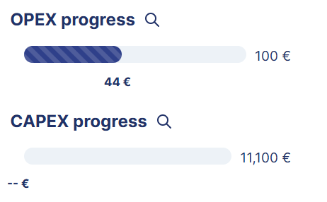
Action data: OPEX and CAPEX progress
An action is deployed on 2022, 2023 and 2024, and is bound to an OPEX tracking indicator.
Below is a table that displays the values of the OPEX actual and OPEX budget allocated to this action:
{kind=link}
The OPEX progress for the action in 2023 (year selected in the POV) is as follows:
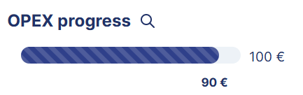
90 euros is the cumulative OPEX actual up to 2023, obtained by aggregating the actual values of 2022 and 2023, that is 20 and 70.
100 euros is the total cumulative OPEX budget up to 2024 (end year of the action), obtained by aggregating the budget values of 2022, 2023, and 2024, that is 50, 20, and 30.
When the OPEX or CAPEX actual exceeds the OPEX or CAPEX budget allocated to the action, the screen warns you. The progress bar, as well as the OPEX or CAPEX actual, are displayed in red.
In this section, you can find the following sub-sections:
View or Enter OPEX and CAPEX Budgets
To view or enter OPEX and CAPEX budgets allocated to the action, access the Budget Definition screen from the Create/Edit pop-up panel.
NOTE See the Follow-Up section of the Action Reports: Create and Attach an Action to a Strategy documentation.
View or Enter OPEX and CAPEX Actuals
You can view or enter OPEX and CAPEX actuals from the detailed view mode of this screen.
If your action is linked to a tracking indicator (OPEX, CAPEX, or only quantitative but not OPEX or CAPEX), or you selected a parent entity in the POV, click the button to view details of OPEX or CAPEX data:
-
From the start year to the end year of the action, and
-
For the entity selected in the POV
If your action is not linked to a tracking indicator, and you selected a child entity from the POV, click the  button to enter OPEX or CAPEX actual data for the year and entity selected in the POV:
button to enter OPEX or CAPEX actual data for the year and entity selected in the POV:
-
When the action periodicity is Yearly:
-
Double-click a white cell.
-
Enter the actual.
-
Save.
-
-
When the action periodicity is Semiannually, Quarterly, or Monthly:
-
Double-click a white cell.
Another table appears.
-
Double-click a white cell in this new table.
-
Save.
-
NOTE When the action periodicity is Semiannually, Quarterly, or Monthly, the actual value, displayed in the main table, is the annual cumulative, that is the aggregation of all actual values defined by given period.
Moreover, you can compare actuals with budgets.
View a Chart on the Action Evolution over Time
On the action card, you can find a chart. In this chart, you can view the data on the action evolution over time. Collected data on the indicator linked to the action is represented by the blue columns. The trajectory of the action is represented by the orange line.
By hovering over the blue columns, you can view the details about the achievement of the target.
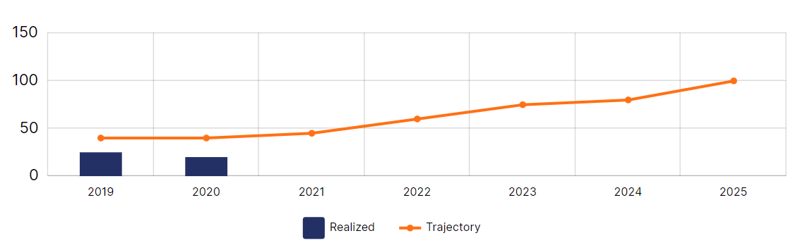
Add Comments and Attachments
You can add comments in the Comment block, and attach files to an action in the Attachments block.
To add a comment, enter data in the Comment input zone, then click the button.
To attach files to an action, you have two options:
-
Drag and drop a file in the Attachments block.
-
Click the Attachments click zone, then select a file from your local computer.
Define Quantitative Target Values
For an action attached to an indicator, you can define quantitative target values.
To define these values, click the  button, then select Target definition.
button, then select Target definition.
Three dots drop-down menu
The Indicator Tracking screen appears.
Validate, Close, Reject or Reopen Actions
In this section, you can find the following sub-sections:
Validate and Close Actions
Authorized users can validate and close one or all implemented actions. See the Security Notes above.
Validating means approving the entered or calculated action advancement, as well as the budget and cost data.
Closing means that you can no longer enter or calculate the action advancement, budget and cost data.
To validate an action:
-
Click the
 button.
button.The Validate action pop-up window appears.
-
Click Validate.
To validate all actions:
-
Click the
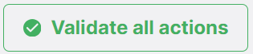
button.The Validate all pop-up window appears.
-
Click Validate all.
To close an action:
-
Click the
button.The Close action pop-up window appears.
-
Click Close.
To close all actions:
-
Click the
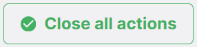
button.The Close all pop-up window appears.
-
Click Close all.
Reject Action Validation
Authorized users can reject validation for an implemented action. See the Security Notes above.
To do so:
-
Click the
 button in the action card.
button in the action card.The Leave a comment pop-up window appears.
-
Enter your reason for refusal as a comment.
-
Click Submit.
The
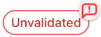
icon appears at the top of the action card.
To read the comment, click the  button attached to the icon.
button attached to the icon.
Reopen Actions
To reopen a closed action:
-
Click the
button in the action card.The Leave a comment pop-up window appears.
-
Enter your reason for refusal as a comment.
-
Click Submit.
View the Validation History
The validation history allows you to view information, such as the date and the user name, advancement, budget and cost data, as well as comments, for each action workflow step:
-
Validation: The action has been validated.
-
Unvalidation: The action has been invalidated.
-
Closure: The action has been closed.
-
Unclosure: The action has been reopened.
To view the validation history, click the  button, then select Validation history.
button, then select Validation history.
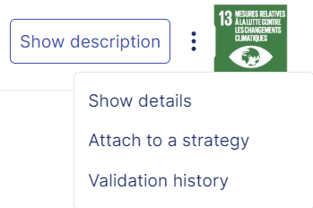
Three dots drop-down menu
The Validation history pop-up window appears.
{kind=link}
Progression Synthesis Cards
At the top left of the screen, you can view two types of progression synthesis cards:
To switch from one card to another, click the switch button.
Status Progression Synthesis Card
The Status progression synthesis card displays the percentage of pending, in progress, completed, on standby, and abandoned actions, against the action total number.
You cannot view the percentage of rejected or approved actions.
The percentage calculation takes into account the actions with the same periodicity as selected in the POV, as well as activated alerts.
NOTE To know more on statuses and alerts, see Action Reports: Statuses and Alerts.
Workflow Progression Synthesis Card
The Workflow progression synthesis card displays the percentage of in progress, validated and closed actions, against the action total number.
The percentage calculation takes into account the actions with the same periodicity as selected in the POV, as well as activated alerts.
Export Information on Actions
To export information on actions that fall within your functional scope:
-
Click the
 button at the top right of the screen.
button at the top right of the screen. -
Click Export my actions.
The Export my actions pop-up window appears with a download link.
-
Click the download link for the Excel file.
- Actions: Information on attached actions
- Unattached actions: Information on non-attached actions